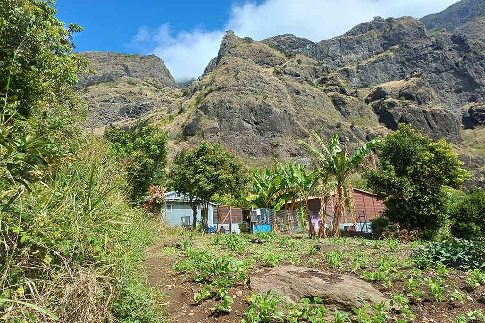
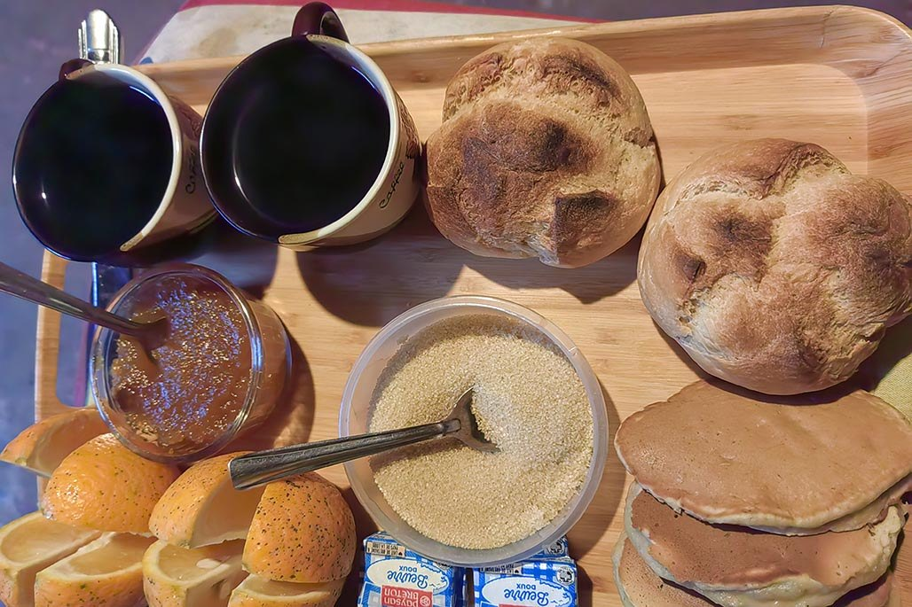

Gîte de randonnée · Îlet des Lataniers, cirque de Mafate
L’îlet des Lataniers est un petit îlet du majestueux cirque de Mafate. Le Bérande vous y accueille dans une ambiance traditionnelle, avec une cuisine où l’on fait surtout du « maison ».

L’essentiel
Pain, crêpes et confitures maison selon la saison : ici, on cuisine surtout du « maison ».
Punch, entrée, cari ou rougail avec riz, grains et piment, puis dessert : la table créole du soir.
Trois dortoirs et trois chambres doubles, pour les marcheurs seuls, en famille ou en groupe.
Draps, oreillers et couettes fournis : votre sac reste celui d’une journée de marche.
Le Bérande en images
Venir aux Lataniers
L’Îlet des Lataniers se rejoint à pied par les sentiers de montagne, ou en hélicoptère. Avant de partir, renseignez-vous sur l’état des sentiers de Mafate auprès de l’ONF.
Équipements
22 personnes · 3 dortoirs (6, 4 et 4 places) · 3 chambres doubles · douches et toilettes communes.
Les randonneurs saluent l’accueil, la propreté et des repas délicieux.
Ils en parlent
Les randonneurs retiennent l’accueil, la cuisine maison, le petit-déjeuner et le cadre.
« Lors de nos randonnées la semaine dernière à Mafate, très belle découverte à Ilet des Lataniers du gîte Le Berende 🇷🇪👏. Accueil en musique et très bon accueil par le propriétaire qui cuisine très très bien. Et surtout il a su s’adapter à des randonneurs qui étaient végétariens. Au petit déjeuner, nous avons été gâtés, une brioche faite maison, du bon pain. Confiture maison. … »
« Très bien accueilli, repas délicieux et tout fait maison du punch cacahuète de la cour au gâteau citron en passant par le civet canard la cour et rougail saucisses. On c’est régalé ! Les hôtes sont très gentils, on a bien discuté. Un gîte Mafatais authentique comme il se fait rare, merci pour ce moment. »
« Nous avons séjourné une nuit chez Johny. Clairement un des meilleurs gîtes de tout Mafate. L’accueil s’est très bien passé, le dîner était excellent - la meilleure option végétarienne que j’ai eu. … »
« Très bel accueil du jeune garçon qui est resté constamment disponible et toujours souriant ! Douche avec eau chaude, et sanitaire propre. … Très bon repas et petit déjeuner très bon avec des pancakes ! Possibilité de charger son téléphone facilement et quand on veut. Sublime vue à 50metres. »
« Un accueil très sympathique, un repas vraiment bon et convivial, des chambres doubles très tranquilles avec literie confortable. Un petit déjeuner original avec des crêpes au lait de coco et un vrai jus de fruit en plus du pain habituel et de la boisson chaude. »
Extraits d’avis publiés sur Google et cirquedemafate.re. Lire tous les avis · Voir la fiche de l’Office de tourisme de l’Ouest

La table du Bérande
Le soir, vers 19 h : punch apéritif, une entrée (gratin, salade, beignets…), un cari ou un rougail avec riz, grains et piment, puis le dessert. La cuisine est préparée au feu de bois, avec un maximum de plats faits maison.
Au petit-déjeuner : café, cacao ou thé, pain maison, crêpe ou gaufre selon les jours, beurre, confitures maison selon la saison ou miel. Les voyageurs parlent aussi de brioche maison et de jus de fruit.
Autour du Bérande
Infos pratiques
À pied par les sentiers de Mafate, ou en hélicoptère
Demi-pension : dîner, nuit et petit-déjeuner
Jusqu’à 22 personnes, en dortoir ou en chambre
Arrivée l’après-midi, départ le matin : horaires précisés à la confirmation
Dîner réservé au moins 48 h à l’avance ; petit-déjeuner tôt, horaire fixé ensemble la veille
Draps, oreillers et couettes fournis ; pensez à votre serviette et à votre trousse de toilette
Bienvenus sous conditions, à l’extérieur des chambres : à convenir avec le gîte
Le solde se règle en espèces au gîte
Sur demande, selon vos dates
Collectée par l’hôte pour les réservations en direct, indiquée à part
Contrat écrit et état descriptif remis à chaque réservation directe
Lit parapluie fourni
Réserver en direct
Indiquez la nuit de votre passage aux Lataniers et le nombre de randonneurs : Le Bérande vous répond personnellement avec le tarif de la demi-pension.
Par e-mail : écrire au Bérande